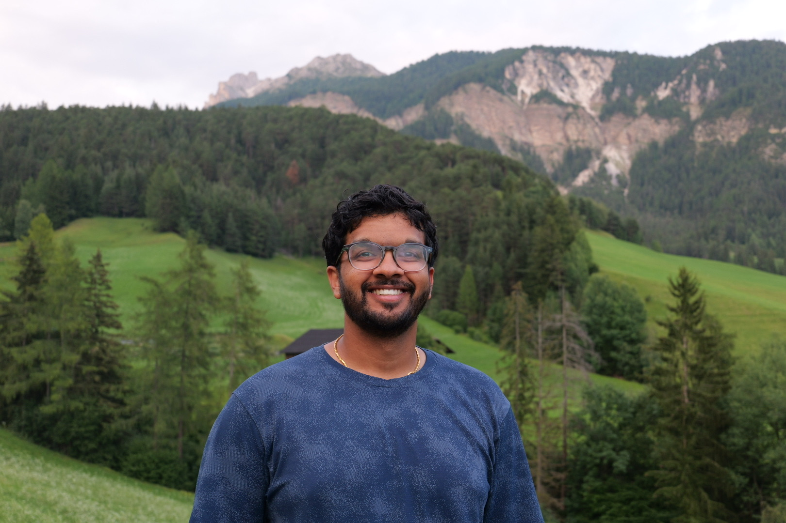

AI Engineer, Obin AI
M.S. student, OMSCS, Georgia Institute of Technology
Email: kganapathy23 [at] gmail [dot] com
CV | Google Scholar | GitHub | LinkedIn
I am an AI Engineer at Obin AI and an M.S. student in Georgia Tech's Online Master of Science in Computer Science (OMSCS) program. Before that, I was a software engineer on the GenAI Platform team at Capital One. My current interests lie at the intersection of agentic AI and finance: building systems where language models plan, use tools, and take actions to solve real-world financial tasks. Earlier, I did machine learning research with Tom Goldstein's group at the University of Maryland, where I studied the peer review process at machine learning conferences, including the role of author demographics in ICLR participation and review. I have also worked on genetic algorithms for hyperparameter optimization of neural machine translation models. In my free time, I love watching sports, playing golf, hiking, and trying new restaurants.